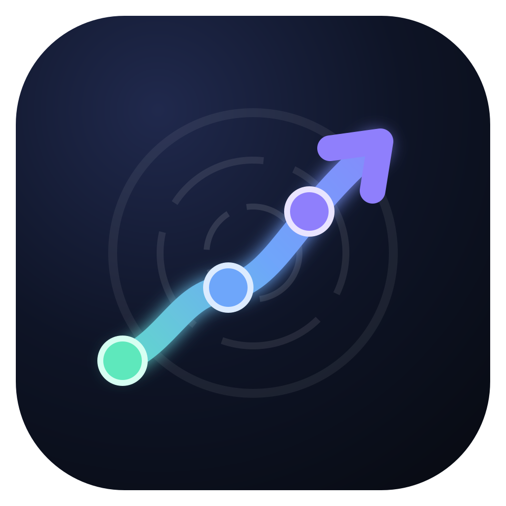
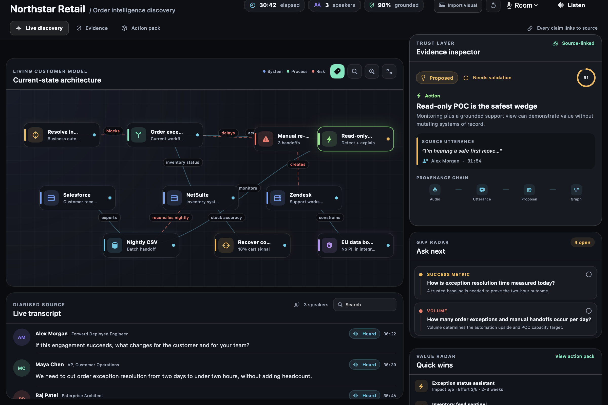
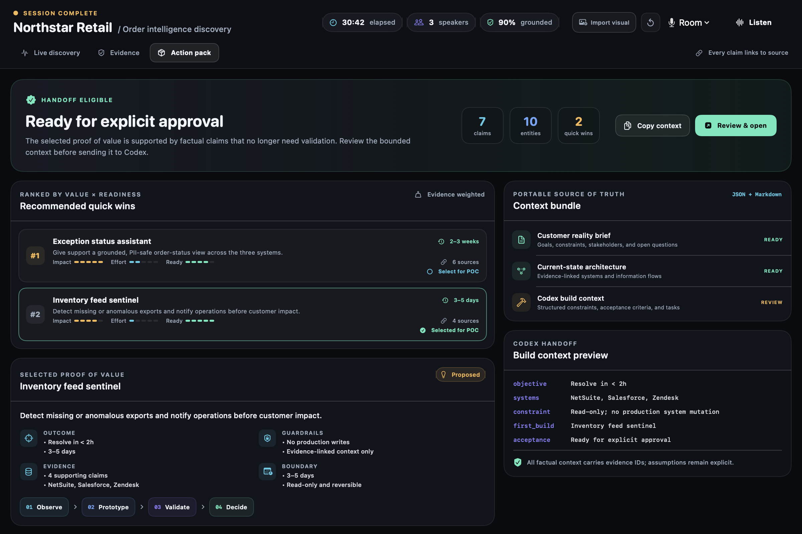

The software was ready.
The room wasn’t.
A frequent blocker to adopting technology is the trust we have in our understanding, our systems, and one another.
One conversation becomes several private realities.
“We need to cut order exception resolution from two days to under two hours.”
We ask people to trust a future they cannot yet see.
Conversation
Nuance is rich, but trapped in the room.
Notes
Signal is compressed into a private summary.
Interpretation
Assumptions quietly become requirements.
Build
Teams execute against a distant version of truth.
Surprise
The customer finally sees what everyone meant.
Trust changes when understanding becomes visible.
Not a summary after the call. A living object everyone can see, challenge, and shape together.
customer reality
An evidence-linked customer model that forms while builders and customers are still in the room.
Hear the real system
Capture outcomes, actors, processes, constraints, and contradictions from the live conversation.
Show what deserves trust
Keep evidence, claims, confidence, validation, and proposals visibly distinct.
Turn understanding into motion
Reveal gaps, simulate safer futures, and hand only approved context to the build.
The room sees the same reality taking shape.

Let the customer model form.
Scripted data illustrates how heard statements can become outcomes, dependencies, friction, constraints, and proposed next questions.
Scout does not decide what is true. It shows what deserves trust.
Confidence is not truth. Inference is not evidence. A proposal is not a decision.
Correction becomes a source of trust.
“The export runs every night.”
“Correction: it runs at 2 a.m., and failures are silent.”
The roadblocks become visible without becoming blame.
The gaps help Scout propose what to ask next.
Gaps stop hiding in meeting notes. They become the next moment of human connection.
How is exception resolution time measured today?
A trusted baseline is needed to prove the two-hour outcome.How many order exceptions and manual handoffs occur per day?
Volume determines the upside and the capacity target.Which control validates payloads before they leave the EU boundary?
The proof of value must inherit or explicitly implement it.Who owns the response when the nightly export does not arrive?
Ownership completes the operating model, not just the architecture.A future you can interrogate—not just imagine.
Batch failures surface through customers.
The current model shows a delayed, silent handoff between systems of record.
A responsible first candidate emerges from evidence and assumptions.

Inventory feed sentinel
Detect missing or anomalous exports and notify operations before customer impact.
Understanding stays layered, replayable, and accountable.
Evidence
Immutable source anchors are preserved before claims are accepted.
Utterances
Finalized utterances retain timing and source links; dedicated revision and speaker mapping are next.
Claims
Atomic propositions carry attribution, confidence, validation, and evidence.
Reality graph
Deterministic code reduces valid claims into a revisable customer model.
Projections
Diagrams, gaps, simulations, and action packs are rebuildable views.
The first call becomes the first act of transformation.
Let people see the system. Challenge the understanding. Shape the future. Approve the first safe move—together.